Культура.
Культурна сфера міста представлена краєзнавчим музеєм, міською бібліотекою, будинком культури, музичною і художньою школами, будинком дитячої творчості.
У місті діє спорт-комплекс «Олімп» — сучасний спортивний центр для підготовки олімпійських та паралімпійських спортсменів.
Готель «Кремінна», готельно-ресторанний комплекс «ПриЛесное».
У 1999 створено Свято-Сергієво-Радонезький чоловічий монастир.
Греко-католицький храм в Кремінній освятили в травні 2015 року. Будівництво почалося у 2013 році і не припинялося навіть під час війни.
Краєвиди Кременної
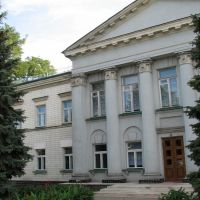
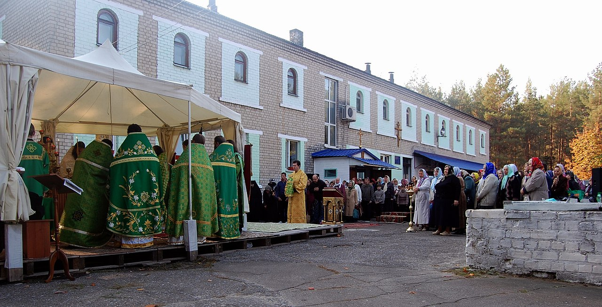
 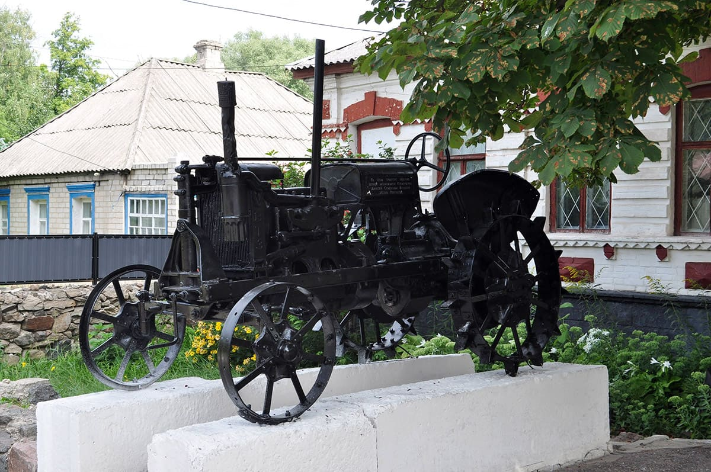
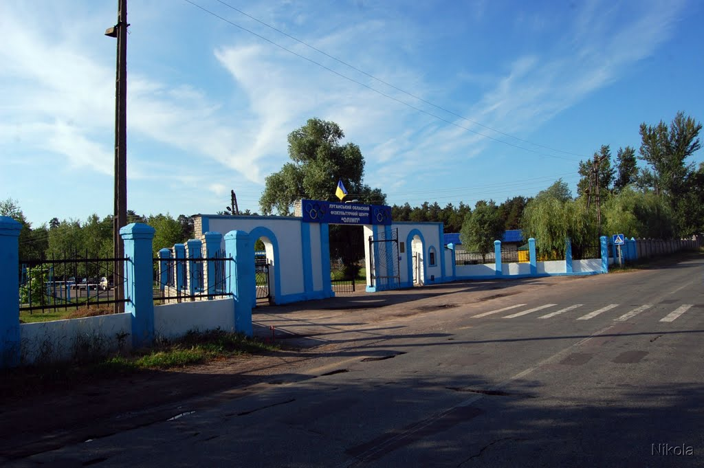
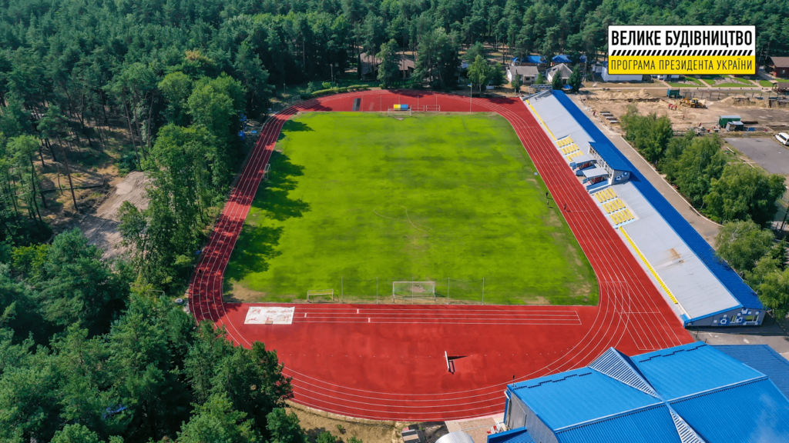
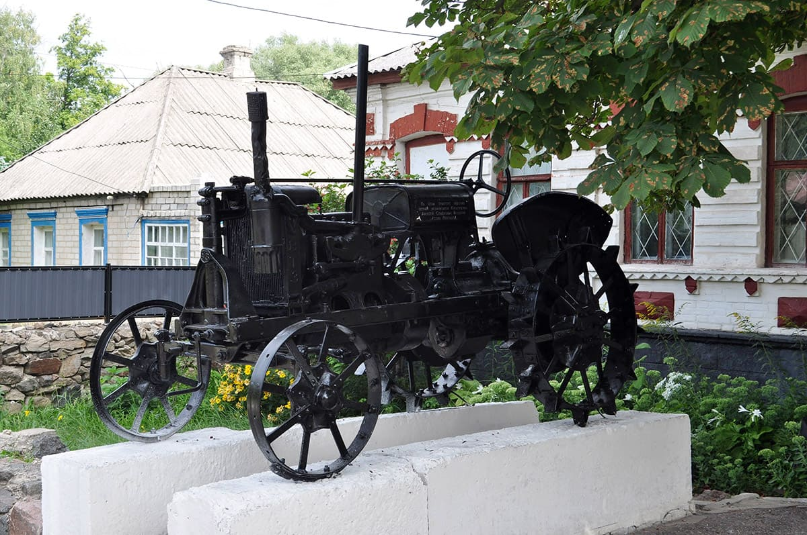
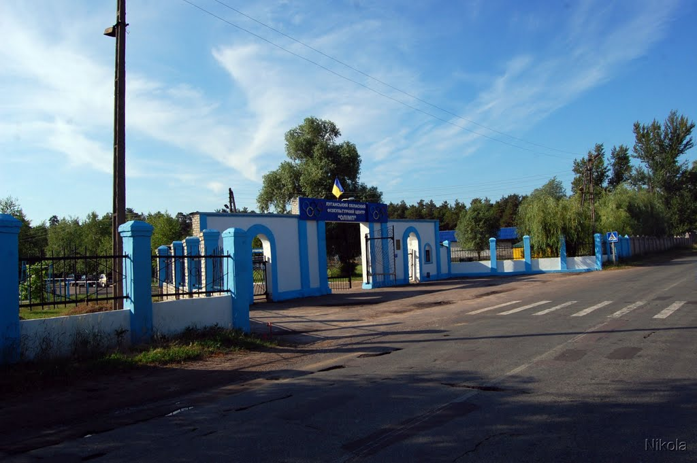
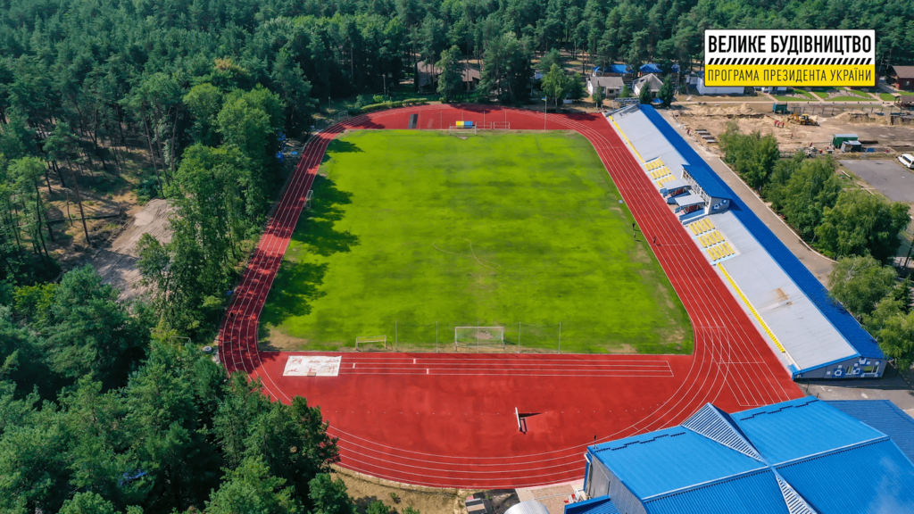
Назад
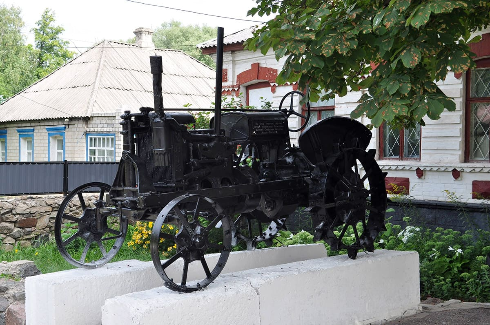
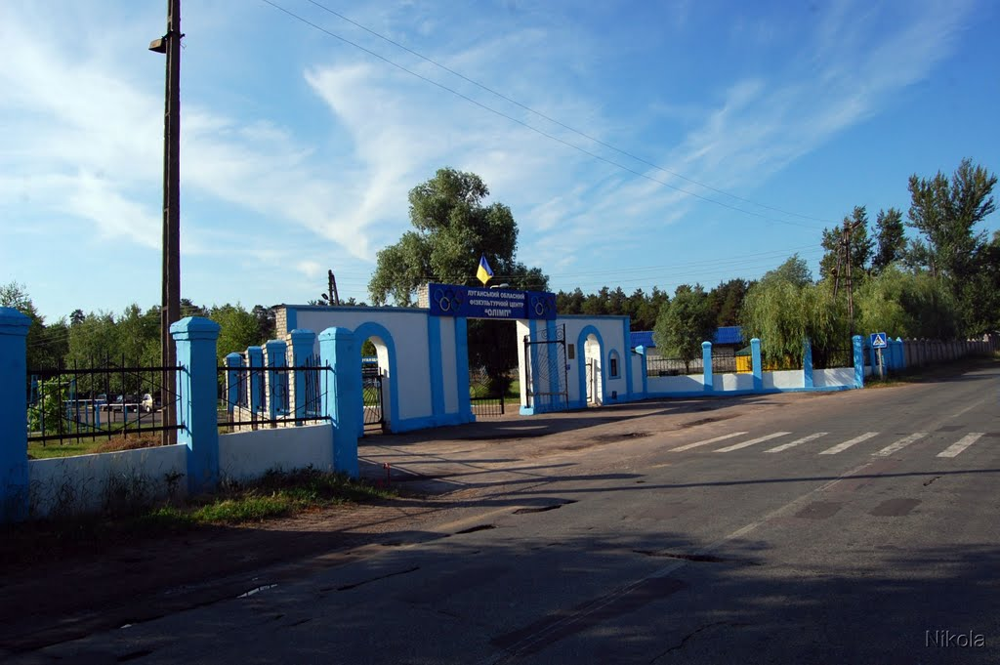
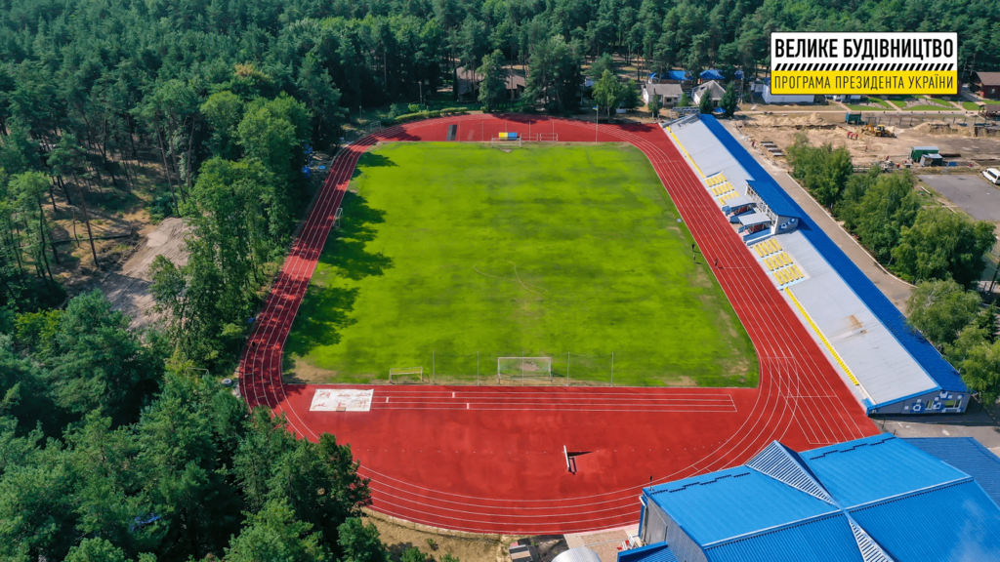